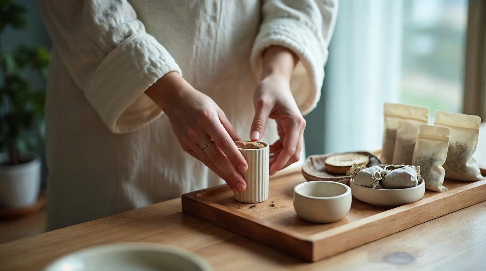
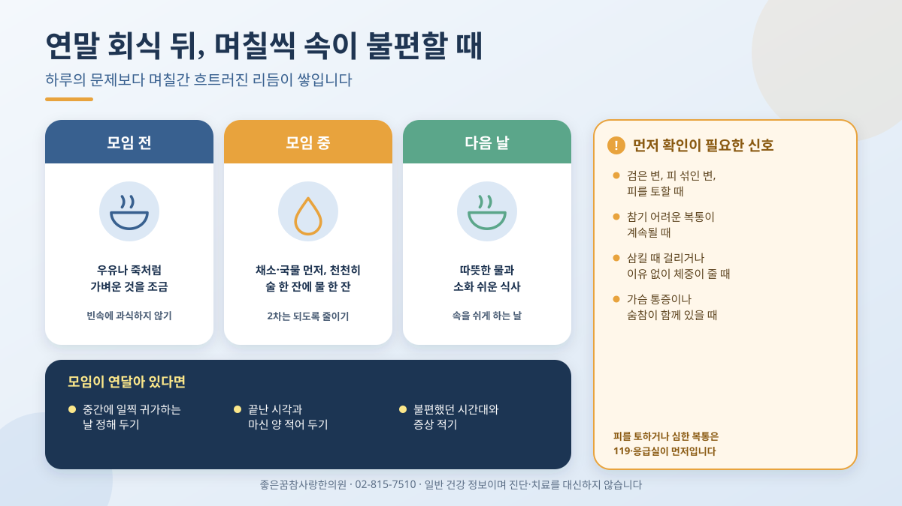

이종호 한의사 감수좋은꿈참사랑한의원 대표원장 (한의사 면허번호 19769)발행 2026-11-22 · 수정 2026-11-26
이 글의 차례
연말에는 늦게, 많이, 기름지게 먹는 날과 짧은 잠이 한꺼번에 이어집니다. 그래서 회식 하루의 문제라기보다 며칠간 흐트러진 리듬이 속에 쌓여 더부룩함과 속쓰림으로 나타나는 경우가 많습니다. 모임이 많은 시기에 속을 덜 지치게 하는 방법을 정리합니다.
왜 이런 불편이 생길 수 있나요
- 기름진 안주와 고기는 소화에 시간이 오래 걸려 다음 날까지 더부룩할 수 있습니다.
- 술은 위를 자극하고 잠을 얕게 만들어 속쓰림과 피로가 함께 오기 쉽습니다.
- 늦은 시각에 먹고 바로 자면 음식이 위에 오래 머물러 아침에 속이 무거울 수 있습니다.
- 모임이 며칠 연달아 이어지면 위가 쉴 틈이 없어 불편이 길어지는 경우가 있습니다.
먼저 이렇게 여쭙니다
- 회식이 일주일에 몇 번이고, 보통 몇 시에 끝나나요?
- 속이 불편한 때가 식사 직후인지, 다음 날 아침인지 어떤가요?
- 음주량과 안주의 종류, 먹는 속도는 어떤가요?
- 그 시기에 잠은 몇 시간 정도 주무셨나요?
- 평소에도 속쓰림이나 신물이 있나요?

일상에서 먼저 해 볼 수 있는 것
- 모임 전에 우유나 죽처럼 가벼운 것을 조금 먹어 공복에 과식하지 않기
- 안주는 구이·튀김보다 채소와 국물 요리를 먼저 먹고 천천히 먹기
- 술 한 잔에 물 한 잔을 곁들이고 2차는 되도록 줄이기
- 모임 다음 날은 따뜻한 물과 소화가 쉬운 식사로 속을 쉬게 하기
- 속을 푼다며 해장술을 마시거나 잠들려고 술을 더 마시지 않기
- 모임이 연달아 있으면 중간에 일찍 귀가하는 날을 정해 두기

한의원에서 함께 살필 수 있는 경우
- 연말 모임 뒤 속이 더부룩하고 소화가 더딘 경우 식사 속도와 소화 리듬을 함께 살핍니다.
- 기름진 음식과 술이 겹친 날마다 속이 쓰린 경우 위장의 상태와 식사 순서를 함께 여쭙니다.
- 모임이 이어져 식사와 잠이 불규칙한 경우 생활 리듬을 함께 정합니다.
좋은꿈참사랑한의원에서는 식사 시각과 양, 대변과 잠의 변화를 먼저 충분히 듣고, 진맥을 기본으로 하고 필요하다고 판단될 때 설진·복진을 더해 몸 상태를 살핍니다. 그 뒤 상태에 맞춰 침이나 한약 상담 등을 정하고, 귀가 전에는 식사에서 먼저 바꿔 볼 점과 다음에 확인할 일을 알려 드립니다.
이렇게 기록해 오시면 상담이 쉬워집니다
- 모임 날짜와 끝난 시각, 마신 술의 양
- 속이 불편했던 시간대와 증상(더부룩함, 쓰림, 신물)
- 대변 모양과 횟수의 변화
- 복용 중인 약(위장약, 진통제 등)
이런 증상은 먼저 확인이 필요합니다
- 검은 변이나 피가 섞인 변, 피를 토하는 경우
- 참기 어려운 복통이 계속되는 경우
- 계속 토해서 물도 넘기기 어려운 경우
- 삼킬 때 걸리거나 체중이 이유 없이 줄어드는 경우
- 가슴 통증이나 숨참이 함께 있는 경우
삼킬 때 걸리거나 체중이 줄어드는 경우는 내과에서 먼저 확인을 받으세요. 피를 토하거나 검은 변을 보는 것을 비롯해 그 밖의 신호가 있으면 한의원 진료를 기다리지 말고 가까운 응급실을 이용하세요. 복용 중인 약은 처방한 의사와 상의 없이 줄이거나 끊지 않습니다.

여쭙는 것
- 회식이 일주일에 몇 번이고, 보통 몇 시에 끝나나요?
- 속이 불편한 때가 식사 직후인지, 다음 날 아침인지 어떤가요?
- 음주량과 안주의 종류, 먹는 속도는 어떤가요?
생활에서 해 볼 것
- 모임 전에 우유나 죽처럼 가벼운 것을 조금 먹어 공복에 과식하지 않기
- 안주는 구이·튀김보다 채소와 국물 요리를 먼저 먹고 천천히 먹기
- 술 한 잔에 물 한 잔을 곁들이고 2차는 되도록 줄이기
한의원에서 함께 살필 것
- 연말 모임 뒤 속이 더부룩하고 소화가 더딘 경우 식사 속도와 소화 리듬을 함께 살핍…
- 기름진 음식과 술이 겹친 날마다 속이 쓰린 경우 위장의 상태와 식사 순서를 함께 여…
- 모임이 이어져 식사와 잠이 불규칙한 경우 생활 리듬을 함께 정합니다.
먼저 확인이 필요한 신호
- 검은 변이나 피가 섞인 변, 피를 토하는 경우
- 참기 어려운 복통이 계속되는 경우
- 계속 토해서 물도 넘기기 어려운 경우
한눈에 보는 표
| 구분 | 핵심 |
|---|---|
| 여쭙는 것 | 회식이 일주일에 몇 번이고, 보통 몇 시에 끝나나요? 속이 불편한 때가 식사 직후인지, 다음 날 아침인지 어떤가요? |
| 생활에서 해 볼 것 | 모임 전에 우유나 죽처럼 가벼운 것을 조금 먹어 공복에 과식하지 않기 안주는 구이·튀김보다 채소와 국물 요리를 먼저 먹고 천천히 먹기 |
| 한의원에서 함께 살필 것 | 연말 모임 뒤 속이 더부룩하고 소화가 더딘 경우 식사 속도와 소화 리듬을 함께 살핍니다. 기름진 음식과 술이 겹친 날마다 속이 쓰린 경우 위장의 상태와 식사 순서를 함께 여쭙니다. |
| 먼저 확인이 필요한 신호 | 검은 변이나 피가 섞인 변, 피를 토하는 경우 참기 어려운 복통이 계속되는 경우 |
자주 묻는 질문
회식 뒤 속이 불편하면 어떻게 살피나요?
먹은 시각과 양, 음주, 수면, 평소 소화 습관을 함께 묻고 생활 전체의 흐름 속에서 살핍니다.
숙취가 있는 날 식사는 거르는 게 좋은가요?
굶기보다 소화가 쉬운 음식을 조금씩 드시는 편이 부담이 적고, 심한 증상이면 진료를 받으세요.
모임이 많은 시기에 미리 할 수 있는 일이 있나요?
식사 시각을 크게 늦추지 않고 모임 사이에 쉬는 날을 두는 정도가 현실적입니다.
해장국은 괜찮나요?
따뜻한 국물은 부담이 덜하다는 분이 많지만 맵고 짠 국물은 속쓰림을 키울 수 있어 순한 것으로 드세요.
좋은꿈참사랑한의원은 재진 때 지난번 이야기부터 이어서 여쭙니다. 진료시간과 예약은 오시는 길에서 확인하세요.
어디서 상담받을 수 있나요?
좋은꿈참사랑한의원은 서울 동작구 만양로2길 2 신성빌딩 3층·5층(서울 동작구 상도동, 7호선 상도역 3번 출구 근처)에 있습니다. 한의사 3명(이종호 대표원장, 조영기 수석진료원장, 정원영 진료원장)이 진료합니다. 진료시간은 평일 09:30~20:00(점심 13:00~14:00), 토·일·공휴일 09:30~15:00이며, 방문 전 전화로 확인을 권합니다. 예약은 네이버 예약, 카카오톡 상담, 전화 02-815-7510로 받습니다.
이 글은 일반적인 건강 정보이며 개인의 진단이나 치료를 대신하지 않습니다. 증상이 있거나 복용 중인 약이 있다면 진료를 통해 확인하세요. 치료 효과는 개인마다 다를 수 있습니다.
작성 기준: 일반적으로 알려져 있는 건강 정보를 참고해 정리했습니다(대표원장 감수). 증상 기록은 1~2주 동안 하루 1회, 비슷한 시간에 적어 오시면 지난 상태와 비교하기 쉽습니다.